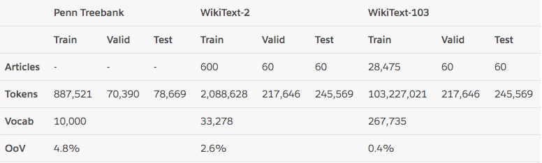
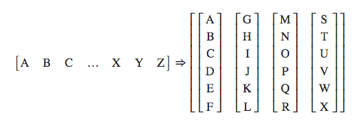
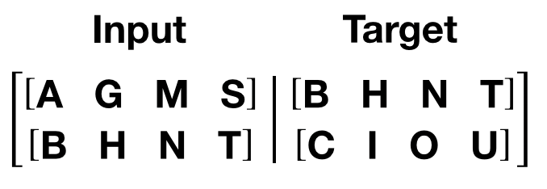

Transformer构建语言模型
Transformer构建语言模型
本文主要来自：The Annotated Transformer
Transformer Model：Transformer架构解析
论文地址: https://arxiv.org/pdf/1810.04805.pdf
代码链接：personal/transformer · GitHub
什么是语言模型:
以一个符合语言规律的序列为输入，模型将利用序列间关系等特征，输出一个在所有词汇上的概率分布.这样的模型称为语言模型.
1 | # 语言模型的训练语料一般来自于文章，对应的源文本和目标文本形如: |
语言模型能解决哪些问题
- 根据语言模型的定义，可以在它的基础上完成机器翻译，文本生成等任务，因为我们通过最后输出的概率分布来预测下一个词汇是什么.
- 语言模型可以判断输入的序列是否为一句完整的话，因为我们可以根据输出的概率分布查看最大概率是否落在句子结束符上，来判断完整性.
- 语言模型本身的训练目标是预测下一个词，因为它的特征提取部分会抽象很多语言序列之间的关系，这些关系可能同样对其他语言类任务有效果。因此可以作为预训练模型进行迁移学习.
整个案例的实现可分为以下五个步骤
- 第一步: 导入必备的工具包
- 第二步: 导入wikiText-2数据集并作基本处理
- 第三步: 构建用于模型输入的批次化数据
- 第四步: 构建训练和评估函数
- 第五步: 进行训练和评估(包括验证以及测试)
1.导入必备的工具包
1 | # 数学计算工具包math |
torchtext介绍：它是torch工具中处理NLP问题的常用数据处理包.
torchtext的重要功能：
- 对文本数据进行处理, 比如文本语料加载, 文本迭代器构建等.
- 包含很多经典文本语料的预加载方法. 其中包括的语料有：用于情感分析的SST和IMDB, 用于问题分类的TREC, 用于及其翻译的 WMT14， IWSLT，以及用于语言模型任务wikiText-2, WikiText103, PennTreebank.
我们这里使用wikiText-2来训练语言模型, 下面有关该数据集的相关详情:

wikiText-2数据集的体量中等, 训练集共有600篇短文, 共208万左右的词汇, 33278个不重复词汇, OoV（有多少正常英文词汇不在该数据集中的占比）为2.6%，数据集中的短文都是维基百科中对一些概念的介绍和描述.
2.导入wikiText-2数据集并作基本处理
1 | import torchtext |
3.构建用于模型输入的批次化数据
3.1 文本数据映射函数
1 | def batchify(text_field:Field, data, batch_size): |
batchify**的样式转化图**：大写字母A，B，C … 代表句子中的每个单词.

使用batchify来处理训练数据，验证数据以及测试数据
1 | # 训练数据的batch size |
上面的分割批次并没有进行源数据与目标数据的处理, 接下来将根据语言模型训练的语料规定来构建源数据与目标数据.
语言模型训练的语料规定：
- 如果源数据为句子ABCD, ABCD代表句子中的词汇或符号, 则它的目标数据为BCDE, BCDE分别代表ABCD的下一个词汇.

- 如图所示，我们这里的句子序列是竖着的, 而且发现如果用一个批次处理完所有数据, 以训练数据为例, 每个句子长度高达104335, 这明显是不科学的, 因此我们在这里要限定每个批次中的句子长度允许的最大值
bptt.
3.2 分割源数据和目标数据
1 | def get_batch(src, i, bptt=35): |
测试
1 | text_field, train_txt, val_txt, test_txt = get_wiki_text2_data() |
1 | tensor([[ 12, 1053, 355, 134, 37, 7, 4, 0, 835, 9834], |
4.构建训练和评估函数
模型训练代码分析:
1 | def train_ones(model, epoch, train_data, criterion, optimizer, scheduler, ntokens, bptt=35): |
模型评估代码分析:
1 | def evaluate(eval_model, datasets, criterion, ntokens, bptt=35): |
5.模型训练和评估
训练
1 | def main(): |
输出效果:
1 | | epoch 1 | 200/ 2981 batches | lr 5.00 | ms/batch 30.03 | loss 7.68 | ppl 2158.52 |
模型测试代码分析:
1 | # 我们仍然使用evaluate函数，这次它的参数是best_model以及测试数据 |
输出结果
1 | ========================================================================================= |
All articles in this blog are licensed under CC BY-NC-SA 4.0 unless stating additionally.
Comment